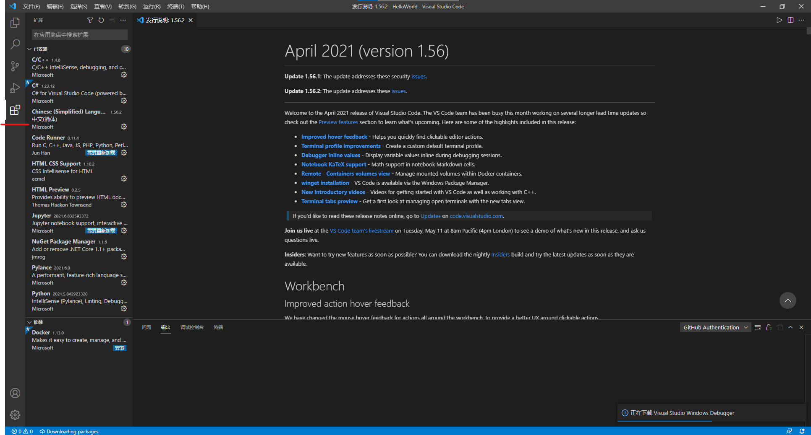
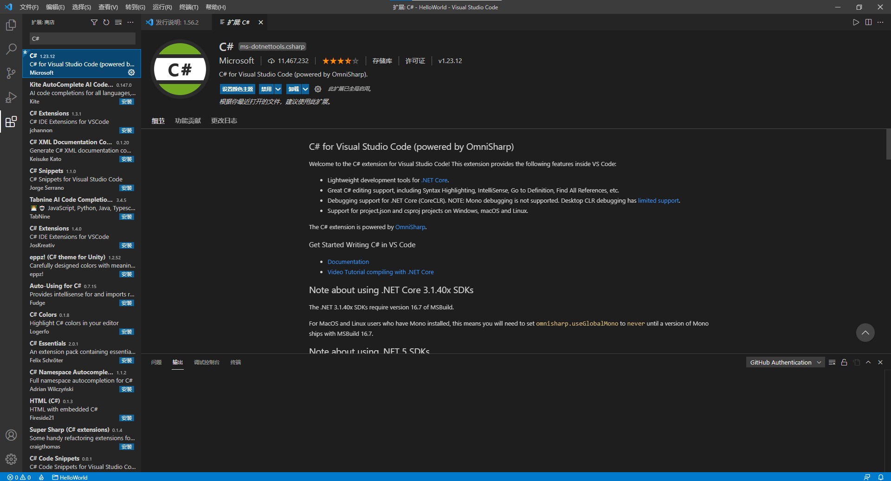
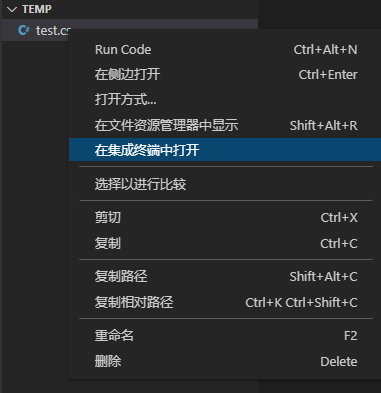
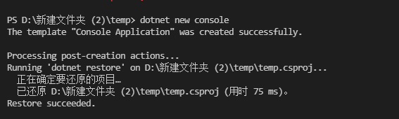
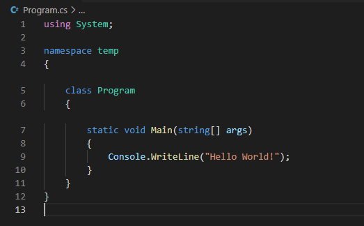
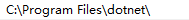
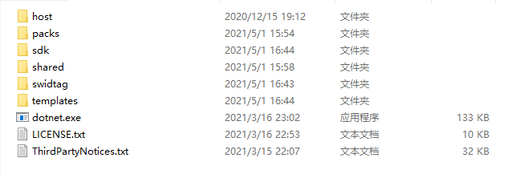

“工欲善其事，必先利其器。”在想要运行C#代码前，先要让你的电脑认识C#。
配置要做的就是这件事。本教程以VS Code为例，教你如何配置C#环境。
VS code 是由Microsoft开发的一款轻量级编辑器。它有很多可安装的插件，为编写代码提供了无限可能。
我们在微软官网可以下载到VS Code。选择你所使用电脑系统所对应的安装包下载并安装。一切就绪后，打开VS Code，你看到的界面可能是这样的：
标红的部分就是下载插件的地方。如果你显示的界面与笔者不同，不要惊慌，可以在网络上找到你所使用的版本所对应的插件在哪里。
搜索“C#”，并下载。
这之后，我们需要在微软官网下载.NET Core SDK资源包。安装时，只需要点击确定即可。
这一切都准备就绪之后，我们就可以创建C#项目了。我们切换到你想要创建项目的目录，打开VS Code中的terminal（终端）（具体的方法是，在资源管理器中找到你所想要创建的目录，右击，点击集成终端），如图：
输入dotnet new console：
如果配置成功，将会自动创建一个Hello World文档，就像这样：
现在，你的C#环境就已经配置好了。你可以在这个文件夹中使用C#了。在终端中输入dotnet run即可运行。
如果你一直无法正常配置，且检查了.NET安装无误，可能是环境变量path中顺序有问题。打开path，你会看到这样一个路径：
这正是我们所需要的，刚才的.NET SDK就安装在里面。
然而，如果你发现路径C:\Program Files (x86)\dotnet在这个之上，我们就需要把x86的这个路径调整至我们所需要的路径下方。这样就能正常的配置了。如果仍然存在问题，可以键入dotnet -h来寻求帮助。
在本章，你学会了：
这仅仅是你开启编程之路的前奏。但是，万事开头难，一个好的开头，预示着接下来的成功。加油！